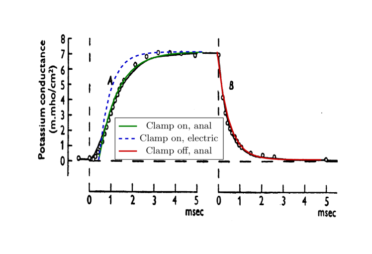

A sejt lényegi működése nagyrészt a sejtmembránhoz közeli néhány nanométeres rétegekben történik, ahol néhány tucat mikroszekundumnyi időre akár több nagyságrendnyi koncentráció, feszültség és elasztikus gradiens (és ebből következően anyagáramlási sebesség) eltérések fordulhatnak elő. Továbbá, a lassú anyagáramlás potenciál- és koncentráció változásokat hoz létre, amik pillanatról pillanatra változnak, és amelyek hatása az ionok kémiai minősége miatt az egyes rétegekben jelentősen eltérő is lehet. Emiatt a történések leírása minden esetben, minden réteg és minden időszakasz esetén egyedi; nem ritkán tudományterületet is kell váltani az egyes szakaszok leírásakor, vagy azokat másféleképpen kombinálni.
A membránba ágyazott ioncsatornák két végén eltérő potenciál és koncentráció van, így az áthaladó ionok jelentős energiára és sebességre tesznek szert. Ez a gradiens azonban megszűnik, amikor kilépnek a csatornából, így az ionok csalódottan ”megállnak”. Az áthaladás mindaddig folytatódik, amíg az áthaladó ionok annyira megnövelik a másik oldal elektrokémiai potenciálját, hogy a gradiens megszűnik. Az elektrolit belsejében a többi, nagyságrendekkel kisebb gradiens természetesen tovább működik, de csak igen lassú anyagtranszportot tud létrehozni. Minden folyamathoz lassú diffúziós hatás is társul, ezért a változások az elektrolit ”bulk” részében a lassú kiegyenlítődés felé tartanak (a határoló membrán közelében más szabályok maradnak érvényben).
Amikor a -ionok behatolnak az intracelluláris szegmensbe, azt jelentős elektrokémiai gradiens hatására teszik. Ilyen módon a közvetlenül az (néhány nanoszekundum ideig tartó) áthaladás után az ionok egy -gazdag réteget hoznak létre, amelyből az ionok töltése (részben közvetlen ütközéssel) kiüti az ott levő, főként ionokat. Alapvetően tehát egy réteg jön létre közvetlenül a membrán intracelluláris része felett, aminek hatására megnő a kondenzátorlemezeken levő feszültség, és mivel a membrán végében az AIS az ionok számára nyelőként viselkedik, így egy azonnali áram indul, amint azt az elektromos modell tárgyalja. A ionok a membránfelület mentén a nagy elektromos gradiens hatására mozognak a nagy vezetőképességű AIS-en keresztül, de kevés mennyiségű és ion nyilván kölcsönösen bediffundál a szomszédos rétegbe. A réteg ionkoncentrációja és potenciálja a kifolyó árammal csökken. Az ionáram lassúsága miatt az ionok csak több tucat mikroszekundumnyi idő alatt érik el az AIS-t.
A pozitív ionok számára kezdetben (a ionok áthaladás után) a membrán is le van zárva, a réteg pedig egy további potenciálgátat jelent. Az idő múlásával azonban a membránon az utándiffúziós folyamatok és a rétegben az AP-t előidéző áram hatására csökkenő koncentráció egyre inkább lehetővé teszi hogy a ionok is elinduljanak a membrán felé és a tapasztalt áram elinduljon, ami csak néhány tucat mikroszekundum után lehetséges. A ”késleltetett csatornák” tehát olyan ioncsatornákat jelentenek, amelyek strukturálisan nem tesznek különbséget ionok között, és a késleltetést az ionrétegekben zajló tranziens folyamatok okozzák. Ezeken a csatornákon valóban ionok folynak ki, amelyek csak akkor indulnak el, amikor a clamping voltage-t a neuronra kapcsolják (azaz, létrehozzák a neuron szegmens nem-egyensúlyi állapotát), és azért csak ionok, mert a termodinamikai gradiens csak számukra kedvező.
HH úgy találta, hogy az AP-t keltő áram két áramra bontható: ”the ionic current during a depolarization consists of two more or less independent components in parallel, an early transient phase of current carried by sodium ions, and a delayed long-lasting phase of current carried by potassium ions”. Meglepő az a következtetésük, hogy bár a ionokból származó áram komponens gyorsan megjelenik, a ionokból álló komponens késéssel és tartósan megmarad. Ha magyarázatuk helytálló, egyetlen AP kibocsátása után a neuron rövid ideig tartó és (5. és 6. ábrájuk szerint) végtelen hosszú ideig tartó áramot bocsát ki. Más szavakkal, amelyik neuron egyszer AP-t bocsátott ki, az mindörökké áramot bocsát ki. Ez neurononként (azaz ) telítési áram és esetén 10 amper állandóan folyó áramot jelentene az agyban, továbbá folyamatosan a nyugalmi potenciál értéke alatt tartaná a membrán potenciált. A különbség megegyezne a clamping feszültség értékével; azaz eltűnne nulla clamping feszültség esetén. Más szavakkal, az extra nyugalmi feszültség és a áram egyaránt eltűnik clamping nélkül, a tapasztalattal megegyezően.
A mi olvasatunkban, a helyes fizika alapján, az áram mindaddig tart, amíg a clamping által okozott feszültséginvázió fennáll, vagy a neuron intracelluláris szegmensének tartalma el nem fogy.
